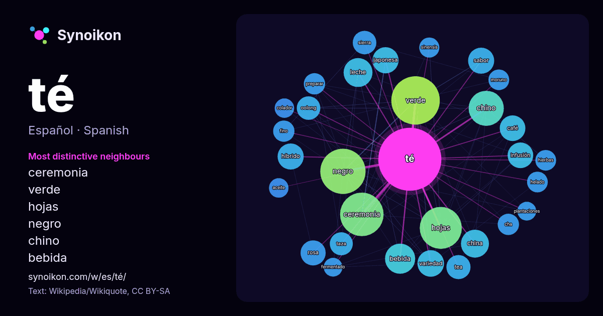

Español · lista de palabras del día
té
“tea” · Las palabras encontradas a su alrededor en 1560 apariciones de Wikipedia, Wikiquote.

Vecinos más característicos
- ceremonia 57×
- verde 56×
- hojas 45×
- negro 43×
- chino 35×
- bebida 32×
- leche 30×
- infusión 27×
- híbrido 26×
- sabor 24×
- tea 24×
- oolong 23×
- café 22×
- taza 21×
- japonesa 21×
- cha 19×
- fino 18×
- moruno 18×
- variedad 18×
- preparar 17×
× = cuántas veces más que en el texto general de Wikipedia.
Vecinos más frecuentes
- verde 93
- negro 81
- ceremonia 75
- hojas 70
- chino 49
- bebida 36
- casa 36
- leche 33
- china 31
- campo 30
- blanco 28
- variedad 28
- forma 27
- híbrido 27
- japonesa 27
- sabor 27
- café 26
- infusión 26
- tipo 26
- rosa 25
En contexto
- El té es la infusión de las hojas y brotes de la planta del té (Camellia sinensis). La popularidad de esta bebida es solamente sobrepasada por el agua Wikipedia snippets · Té
- teluro; Río Te, cauce de agua ubicado en La Coruña, Galicia, España; Wikcionario tiene definiciones y otra información sobre te. Como té puede entenderse: Wikipedia snippets · Te
- El motín del té tuvo lugar el 16 de diciembre de 1773 en Boston, Massachusetts, en el que se lanzaron al mar tres cargamentos de té. Un grupo de colonos Wikipedia snippets · Motín del té
- 乌龙; Chino Tradicional: 烏龍; Pinyin: wūlóng; también conocido como té azul) es un té chino tradicional (Camellia sinensis) que queda entre el verde y el Wikipedia snippets · Té oolong
- El té helado (en inglés iced tea) consiste en una forma helada de té, servida a menudo en un vaso con hielo. Cualquier variedad de té puede ser susceptible Wikipedia snippets · Té helado
- El té con hierbabuena (en árabe, شاي بالنعناع shāy bi l-na'anā), té moruno (en España) o atay (del árabe, أتاي) es una bebida caliente de té verde tipo Wikipedia snippets · Té con hierbabuena
- Una ceremonia del té es una forma ritualizada de preparar el té que se practica en la esfera cultural de Asia del Este, en China, Japón, Corea, Taiwán Wikipedia snippets · Ceremonia del té
- Una bolsita de té o saquito de té es una bolsa pequeña sellada de papel poroso, seda o nailon conteniendo hojas de té, por lo general finamente picadas Wikipedia snippets · Bolsita de té
Más palabras
- agua
- arte
- bosque
- caballo
- camino
- campana
- canción
- ciencia
- ciudad
- clima
- comida
- corazón
- desierto
- dinero
- dios
- espejo
- estrella
- familia
- fuerza
- gato
- historia
- invierno
- isla
- jardín
- lengua
- lluvia
- madre
- mapa
- miel
- montaña
- muerte
- naturaleza
- oro
- otoño
- pan
- perro
- puente
- reloj
- sal
- salud
- silencio
- sombra
- tiempo
- tormenta
- trabajo
- tren
- verano
- verdad
- vida
Precalculado el 2026-10-09 con los ajustes predeterminados (±5 palabras, corpus mediano). El mapa interactivo puede actualizarlo con datos en vivo.
Interfaz traducida automáticamente; se agradecen correcciones.